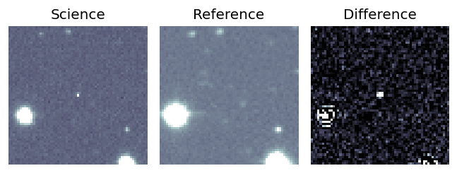
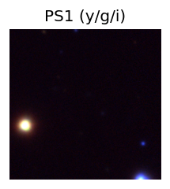
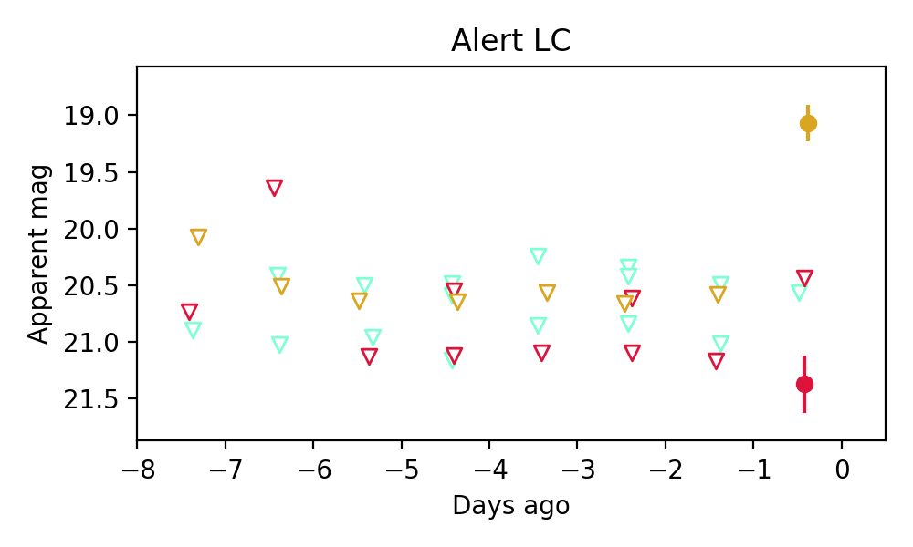
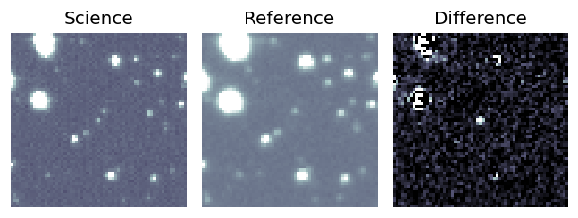
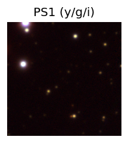
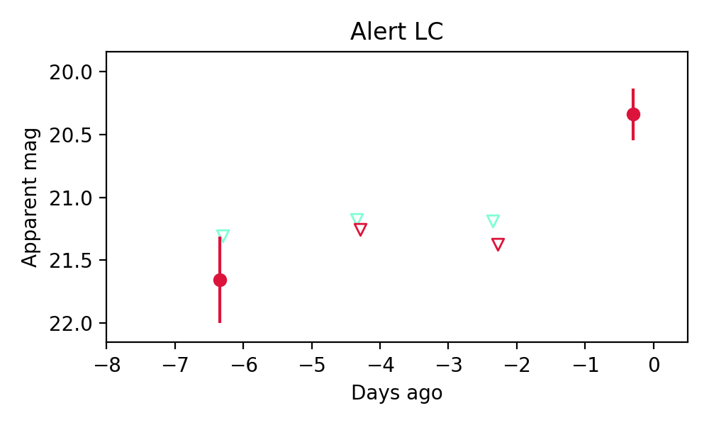
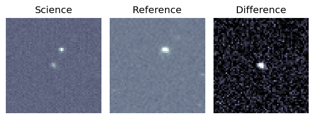
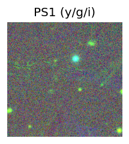
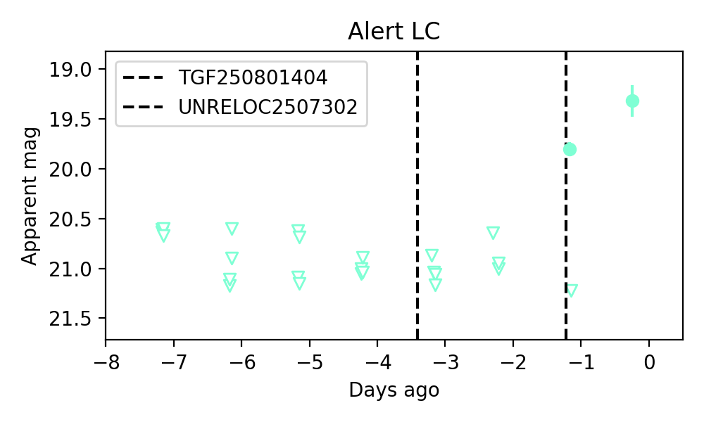

Candidate List 20250802Previous Day Next Day
Section 1: New Sources (age<1d) Section 2: Old (1-5d) sources observed last nightplaceholder
Section 1: New Afterglow/FBOT Cands Last Night (1)
1. ZTF25abgslnu (Afterglow?) [Back to Top] [Share] [Trigger Swift] [Fritz] [Lasair]RA, Dec: 309.58885, -9.15898 20h38m21.32s, -9d-9m-32.33sGalactic (l, b): 36.87726, -27.88986 ext(g-r) = 0.052
PS1: 0 sources in 3 arcsec
LegacySurvey: 1 sources in 3 arcsec Closest: d = 3.54 arcsec, 347.4 deg (east of north) photoz=0.41 (68% bounds 0.3, 0.52), type=REX peak abs mag = -22.72 (68% bounds -21.99, -23.35)

Extinction-corrected gr color:
From alerts: -0.86 +/- 99 mag
Extinction-corrected gi color:
From alerts: 1.42 +/- 99 mag
Extinction-corrected ri color:
From alerts: 2.28 +/- 0.3 mag
Consistent with synchrotron, g-r>0!
Rise Rate:
g: -99 mag/day
r: -99 mag/day
i: 1.48 mag/day
Fade Rate:
g: -99 mag/day
r: -99 mag/day
i: -99 mag/day
Section 2: Older Sources Observed Last Night (2)
0. ZTF25abgrulz (FBOT?) [Back to Top] [Share] [Trigger Swift] [Fritz] [Lasair]RA, Dec: 316.16291, 55.34129 21h 4m39.10s, 55d20m28.64sGalactic (l, b): 94.40616, 5.57635 ext(g-r) = 1.311
PS1: 1 source in 3 arcsec Closest: d = 1.22 arcsec photoz=0.64+/-0.04 peak abs mag = -25.42
LegacySurvey: 0 sources in 3 arcsec

Extinction-corrected gr color:
From alerts: -1.66 +/- 99 mag
Rise Rate:
g: -99 mag/day
r: 0.52 mag/day
i: -99 mag/day
Fade Rate:
g: -99 mag/day
r: -99 mag/day
i: -99 mag/day
1. ZTF25abguagf (Afterglow?) [Back to Top] [Share] [Trigger Swift] [Fritz] [Lasair]RA, Dec: 27.69861, 44.0932 1h50m47.67s, 44d 5m35.53sGalactic (l, b): 134.05147, -17.49323 ext(g-r) = 0.064
PS1: 1 source in 3 arcsec Closest: d = 9.47 arcsec photoz=0.74+/-0.11 peak abs mag = -24.23
LegacySurvey: 0 sources in 3 arcsec

Rise Rate:
g: 2.1 mag/day
r: -99 mag/day
i: -99 mag/day
Fade Rate:
g: 60.21 mag/day
r: -99 mag/day
i: -99 mag/day